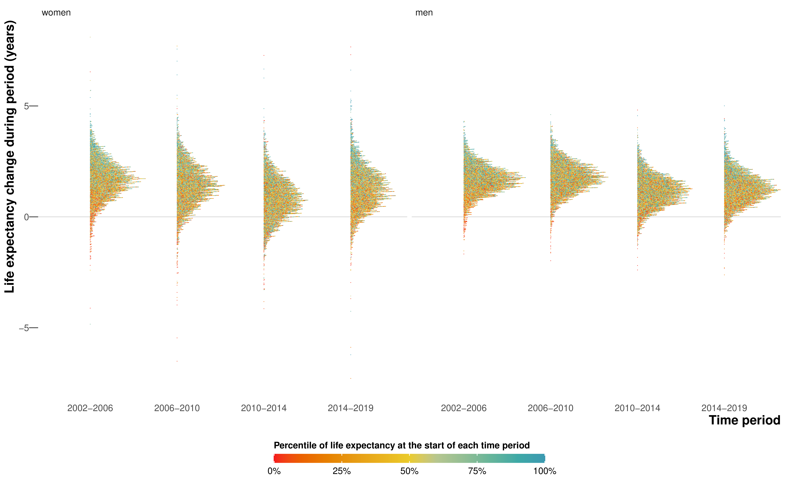
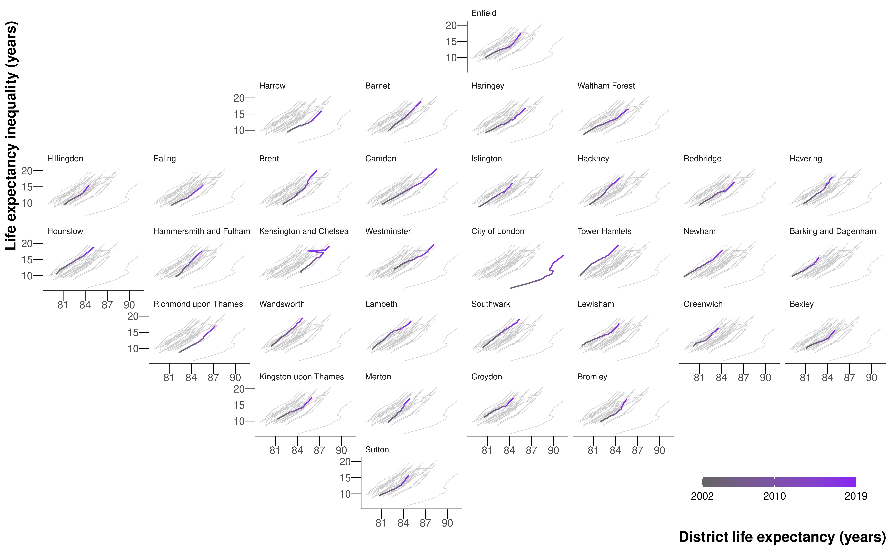
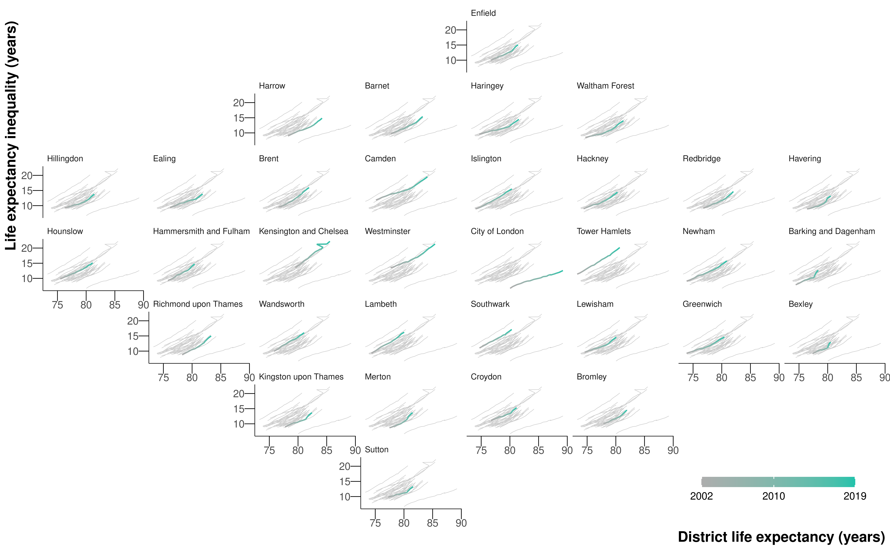
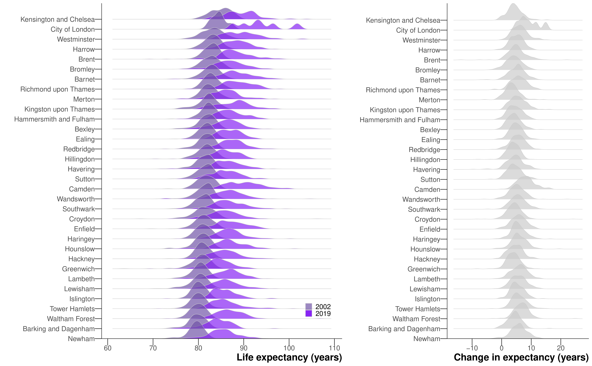
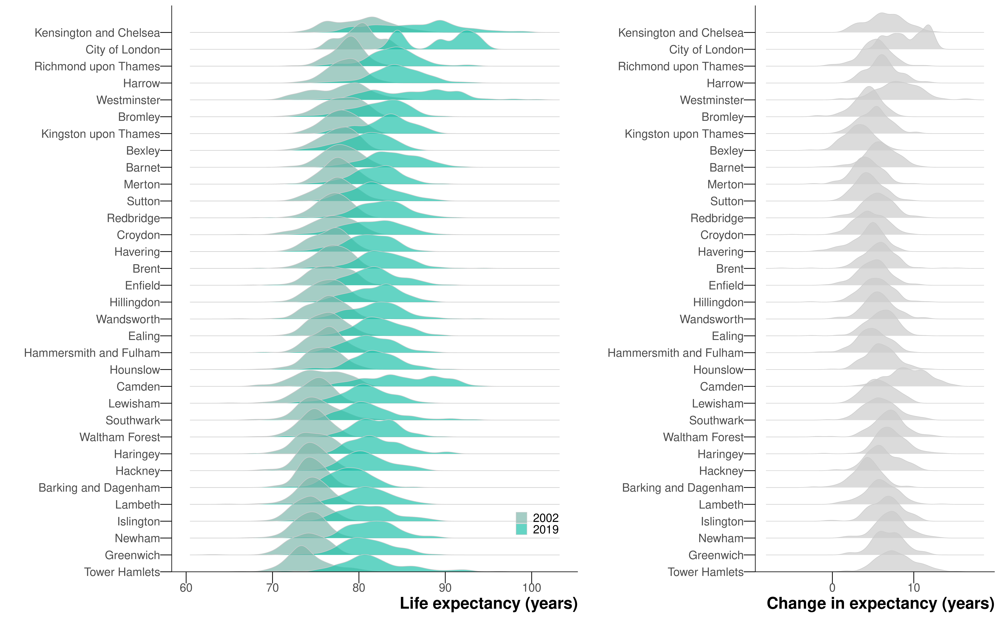

6 Life expectancy inequality in London at the LSOA level
This chapter is based on the peer-reviewed publication Changes in life expectancy and house prices in London from 2002 to 2019: hyper-resolution spatiotemporal analysis of death registration and real estate data, published in The Lancet Regional Health Europe (Bennett et al., 2023), for which I was joint first author. The paper was published under the CC-BY license, which permits reproduction provided the original work is properly cited. The paper combined two main datasets: estimates of life expectancy in London at LSOA level and estimates of house prices at the OA level. Unlike the original text, I will largely focus on the life expectancy estimates, for which I was responsible, rather than the house price estimates produced by James E Bennett.
Although the models in the previous chapter took several days of computing time, runtimes will only decrease as computing power increases. And in theory, the models can be scaled to higher and higher spatial resolutions as both hardware and inference algorithms improve. From a computational perspective, we could potentially estimate mortality for all LSOAs, OAs, or even postcodes in England. In this chapter, I test this idea by modelling life expectancy at the finer LSOA level for a single region in England, its capital city London, which has a number of LSOAs of the same order of magnitude as the number of MSOAs in England.
6.1 Methods
6.1.1 Mortality and population data
I performed a high-resolution spatiotemporal analysis of all deaths in London from 2002 to 2019 (909,097 death records, extract date: 25\(^{\text{th}}\) June 2021), as detailed in Chapter 3. Deaths were stratified by 19 age groups (0, 1–4, 5–9, …, 80–84, 85+) and 4835 LSOAs. These LSOAs fit inside 33 districts: London’s 32 boroughs and the City of London. I did not use 16 death records (0.002%) for which sex was not recorded. In 3267 (0.099%) age-LSOA-year combinations, the number of deaths exceeded the population. In 88% of these combinations, the deaths exceeded population by only one or two, and 96% of these combinations were in people aged 80 years and older. In these cases, the population was set equal to the number of deaths.
6.1.2 Statistical analysis
The model was largely as outlined in Chapter 4, with a few changes: First, the negative binomial likelihood from Equation 4.2 was replaced with a beta-binomial likelihood, \[ \text{deaths}_{ast} \sim \text{Beta-Binomial}(m_{ast} \rho, (1 - m_{ast}) \rho, \text{Population}_{ast}). \tag{6.1}\] where \(m_{ast}\) is the death rate and \(\rho \geq 0\) is the overdispersion parameter. I found that the variability of the LSOA-level mortality data was such that death rates did near 1, violating the assumption for Equation 4.2 that mortality is low. In fact, when I tested a negative binomial or Poisson likelihood, I found the death rates for some age-LSOA-year combinations exceeded 1, which of course is impossible. The beta-binomial likelihood is a generalisation of the binomial distribution that allows for overdispersion. The death rates were logit-transformed and the model structure is otherwise the same as Equation 4.4, but using nested hierarchical random effects with LSOAs nested in MSOAs, which were nested in districts. A \(\rho \sim \exp (0.1)\) hyperprior was used for the overdispersion term, and \(\sigma \sim \mathcal{N}^+(1)\) hyperpriors for the standard deviation parameters, as recommended by the Stan development team (Stan development team, 2020).
Table B.2 shows all model parameters, their priors and dimensions.
Again, I used NIMBLE for MCMC (de Valpine et al., 2022, 2017), with four chains of 80,000 iterations, discarding the first 30,000, thinning the remainder by 200 and checking for convergence using trace plots and \(\widehat{R}\) (Vehtari et al., 2021).
The local effect of the Grenfell Tower fire was even more pronounced at the LSOA level. In 2017, the LSOA in Kensington and Chelsea where Grenfell Tower is located had 75 deaths, compared to less than 15 in 2016 and 2018. The additional deaths were caused by a fire in a highrise residential building. I used the same treatment as in Chapter 5 to remove the outlier from the modelling stage and add the excess mortality in at a later stage before calculating life expectancies. I defined life expectancy inequality as the difference between 2.5\(^{\text{th}}\) and 97.5\(^{\text{th}}\) percentiles of LSOA life expectancies.
6.2 Results
6.2.1 Inequalities in life expectancy
Life expectancy at birth for London increased from 80.9 (95% CrI 80.8–81.0) years in 2002 to 85.4 (85.3–85.5) years in 2019 for women, and from 76.1 (76.0–76.2) years to 81.6 (81.5–81.7) years for men. Life expectancy inequality (difference between 2.5\(^{\text{th}}\) and 97.5\(^{\text{th}}\) percentiles) was 19.1 (18.4–19.7) years for women and 17.2 (16.7–17.8) years for men, in 2019 which is a substantial increase from 11.1 (10.7–11.5) years for women and 11.6 (11.3–12.0) years for men in 2002. The corresponding estimates for life expectancy inequality in 2019 calculated using MSOA level analysis in Chapter 5 were 10.8 (10.3–11.3) years for women and 11.0 (10.5–11.6) years for men.
Life expectancy in 2019 was highest in LSOAs in central London districts of Kensington and Chelsea, Westminster, City of London and Camden, in the southwest (Richmond upon Thames and Kingston upon Thames) and parts of the northwest (e.g., parts of Harrow and Barnet), with life expectancy in many LSOAs surpassing 90 years (Figure 6.1). Low life expectancy was spread in LSOAs throughout the city but was more common in outer east and southeast London.
6.2.2 Change in life expectancy and inequality
There was large variation across London in how much life expectancy increased from 2002 to 2019, ranging from <2 years in 537 (11.1%) LSOAs for women and 214 (4.4%) for men to >10 years in 220 (4.6%) for women and 211 (4.4%) for men (Figure 6.2). In 134 (2.8%) LSOAs for women and 32 (0.7%) for men, life expectancy may have declined, with a posterior probability of a decline >0.80 in 41 (0.8%) and 14 (0.3%) LSOAs for women and men, respectively. Life expectancy increased more in LSOAs in central and inner east and south London than in outer areas.

The rate of increase in life expectancy was smaller after 2010 compared to the earlier years for both sexes (Figure 6.3), and the number of LSOAs in which life expectancy may have fallen was larger, especially from 2010 to 2014. The slow-down or reversal of LSOA life expectancy after 2010 is consistent with the pattern seen throughout England’s MSOAs in Chapter 5, which may be partly due to increase in poverty due to low-wage employment and cuts in services in the austerity era. However, the progressive worsening of life expectancy gain and loss from 2010–2014 to 2014–2019 which was seen in other parts of England did not happen in London (Figure 6.3).


There was substantial variation in the size of life expectancy increase over short distances. As a result of this spatial heterogeneity, life expectancy inequality increased not only in London as a whole, but also in every district in London alongside increasing average life expectancy (Figure 6.4 and Figure 6.5).


By 2019, female and male life expectancies had a 2.5\(^{\text{th}}\)–97.5\(^{\text{th}}\) percentile range that was >12 years in every district, and >20 years in three districts for men and two for women. In 2002, within district inequality had been >12 years in only two districts for men and none for women. At the same time, the difference between districts with the highest and lowest life expectancy increased from 5.9 (5.2–7.7) years in 2002 to 8.5 (5.9–11.9) years in 2019 for females, and from 6.8 (5.9–8.7) years to 10.9 (8.2–14.2) years for males indicating that the rise in life expectancy inequality took place both within and between districts.
6.3 Discussion
This high-resolution analysis revealed that in London, a major global metropolis, not only has life expectancy inequality increased substantially, but this increase has happened both between districts and within every district.
Life expectancy in London has previously only been reported at MSOA level, as discussed in Chapter 5. When aggregated to MSOA level, the LSOA life expectancies in this work were correlated with MSOA estimates in Chapter 5 (correlation coefficient \(>0.99\) and mean difference \(\leq 0.01\) years for both sexes).
In the main paper (Bennett et al., 2023), we also looked at how life expectancy improvements varied with house prices and their changes throughout the city, and whether population change may partly mediate this association. We found the change in life expectancy had different associations with price change in more expensive versus lower cost communities: where prices were high at the turn of the century, life expectancy increased substantially independently of price change, and with little change in the resident population. In contrast, in areas that started with lower prices, life expectancy only increased proportional to price change, and was accompanied by a greater influx of new residents into the local area. This change in residents saw a greater proportion of the population in working ages, and socioeconomically better off, and an outflux of residents in retirement ages and to a lesser extent children, adolescents and young adults. This implies that a portion of the change in life expectancy may be due to change in the resident population.
6.3.1 Strengths and limitations
The main strength of the study is the presentation of very high-resolution data on life expectancy and house prices in consistent spatial and temporal units in a major global city over a period of substantial policy interest and investment in urban renewal. Carrying out the study at the LSOA level uncovered inequalities to a fuller extent.
I defined life expectancy inequality as the difference between 2.5\(^{\text{th}}\) and 97.5\(^{\text{th}}\) percentiles of LSOA life expectancies rather than the difference between the maximum and minimum as in Chapter 5. This was because the LSOAs with extremely low life expectancies tended to contain age-LSOA-year combinations in which the number of deaths exceeded the population. Small-area population, which is the denominator of age-specific death rates, is estimated by the ONS for intercensal years, and may be subject to error. This is especially the case in older ages when some people live and die in a long-term care facility, and may be counted towards population (denominator of death rates) in their original LSOA of residence and towards deaths (numerator of death rates) in the LSOA where the care facility is located. There were a higher proportion (0.099% compared to 0.001% in Chapter 5) of spatial units with this issue at the LSOA level. In 2019, 11 LSOAs for women and one LSOA for men had life expectancies in which the median estimate was greater than 100 years. Given the MSOAs with the highest life expectancies for each sex in Chapter 5 were both in London and exceeded 95 years, these estimates may be plausible for some LSOAs, which contain around a fifth of the population of MSOAs. However, upon inspection, four out of the five LSOAs with the largest increases in life expectancy, which were also LSOAs with life expectancies above 100, were adjacent to LSOAs with very large decreases. And in four out of five LSOAs with the largest estimated decreases in life expectancy, estimated population counts were lower than the recorded death counts in the older age groups in several years of the data, implying that populations or deaths may have been allocated incorrectly. Subsequent inspection showed that postcodes coinciding with, or adjacent to, LSOAs with the largest increases and decreases contained care homes, which can lead to the place of residence or death being inconsistently recorded for some of their residents.
Mortality and house prices were estimated using two separate models because a joint model would be extremely complex and would require additional assumptions about how house prices are associated with age- and LSOA-specific mortality. It was only possible to indirectly evaluate, through LSOA-level population turnover and population characteristics, whether population change is a potential mechanism for the observed change in life expectancy because routine death registration in England only records place of residence at the time of death. Further, there are currently limited time-series data on quality of housing, access to jobs, services and amenities, and other home and neighbourhood characteristics that affect health. To understand whether the change in the life expectancy of a community arises from a change in the health of the population, itself due to changes in their economic status and/or local environment and amenities, versus a change in the resident population, requires linked datasets which are able to track over time environmental characteristics of areas, together with individuals’ place of residence, socioeconomic status and mortality records.
6.3.2 Comparison with previous literature
The inequalities of 19.1 (18.4–19.7) years for women in 2019 and 17.2 (16.7–17.8) years for men in London in 2019 are some of the largest for any city in the literature and the largest for women. Further, some of the inequality in the tails of the life expectancy distribution is masked by our choice of inequality measure, the 2.5\(^{\text{th}}\)-97.5\(^{\text{th}}\) percentile difference, rather than the full range across all LSOAs.
In a study of the 397 census tracts in King County, Washington, a county ranking in the top 5% of the US in terms of both income and life expectancy, Dwyer-Lindgren et al. (2017) found an 18.3 year gap in life expectancy for men between the top and bottom tracts in 2014, and a 14.8 gap for women. For Vancouver, Canada, Yu et al. (2021) found a difference in 2016 of 9.5 years for men and 8.3 years for women between the 90\(^{\text{th}}\) and and 10\(^{\text{th}}\) percentiles of 368 census tracts. Using the same measure of inequality as the Vancouver study, Jonker et al. (2012) uncovered a 8.2 year and 9.2 year gap in life expectancy for women and men for 89 small areas in Rotterdam. Across six large cities in Latin America, Bilal et al. (2019) observed the largest difference between the top and bottom decile of life expectancy at birth was 17.7 years for women in Santiago, Chile.
To some extent, as this is one of the highest-resolution studies in the literature, it is natural that we would find large inequalities. As we go to finer and finer resolutions, we will always uncover more inequality, until we reach the physical limit of the individual and the inequality is between the earliest neonatal death and the oldest person to die in the city.
In terms of work specific to London, beyond that at the MSOA level in Chapter 5, Congdon (2014) considered both ill-health and mortality for 625 wards in London, finding more than a two-fold variation in the percent of life spent in disability for men, but did not mention the absolute inequality of life expectancy in the city. Some studies have documented changes in spatial patterns of poverty in London (Bosetti, 2015; Travers et al., 2016), and have found that poverty rates have fallen in inner East London but may have risen in some outer London areas, with corresponding changes in the share of the population working in higher professional occupations. No previous study has reported how life expectancy change in small-area units coincided with change in house prices.
6.3.3 Urban policy and public health implications
Since the turn of the millennium, London’s population and economy have grown substantially. The economic growth has been highly polarised with high-pay and high-skilled employment alongside low-pay and insecure jobs (Overman and Xu, 2022). As a result, despite city-wide growth in income, nearly one half of London’s population fall in the bottom two quintiles of national income deprivation (Ministry of Housing, Communities & Local Government, 2019). Together with an uncontrolled property market, this has created house prices that are unfavourable to low-income families, displacing entire subgroups of the population to cheaper parts of the city, with fewer amenities and worse access to jobs, quality education, healthcare and other services (Bosetti, 2015). Many are unable to purchase (versus rent) homes and hence spend an increasing share of income on housing, and/or live in lower quality or smaller accommodation in the more desirable districts (Bosetti, 2015; Travers et al., 2016). These trends may have contributed to health inequalities both between nearby areas and across the entire city, alongside other trends such as differences in the extent of neighbourhood improvement, or provisions of health and social care services as council budgets were reduced as a result of austerity policies.
The evolution of London, and major cities in other high-income nations and emerging economies, into places where only the well-off can afford to own properties, where the balance of the city is driven by the cost of property and wealth dominates access, poses a gloomy, non-cohesive future for these cities.
6.4 Summary
I performed a hyper-resolution spatiotemporal analysis of all deaths in London from 2002 to 2019, using a Bayesian hierarchical model to obtain estimates of age-specific death rates by age, sex, and LSOA. I used life table methods to calculate life expectancy at birth by sex and LSOA.
In 134 (2.8%) of London’s LSOAs for women and 32 (0.7%) for men, life expectancy may have declined from 2002 to 2019, with a posterior probability of a decline >0.80 in 41 (0.8%, women) and 14 (0.3%, men) LSOAs. The life expectancy increase in other LSOAs ranged from <2 years in 537 (11.1%) LSOAs for women and 214 (4.4%) for men to >10 years in 220 (4.6%) for women and 211 (4.4%) for men. The 2.5\(^{\text{th}}\)-97.5\(^{\text{th}}\) percentile life expectancy difference across LSOAs increased from 11.1 (10.7–11.5) years in 2002 to 19.1 (18.4–19.7) years for women in 2019, and from 11.6 (11.3–12.0) years to 17.2 (16.7–17.8) years for men.
Although the analysis of life expectancy at the LSOA level is possible, there are issues with the population data for older age groups that limit its utility, particularly concerning the tails of the distribution of life expectancy.